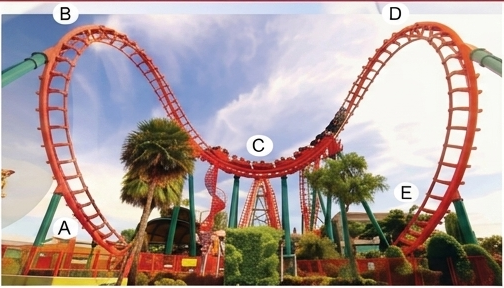
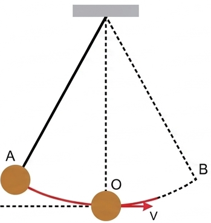
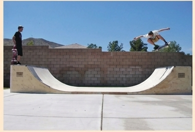
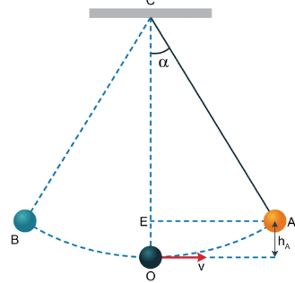
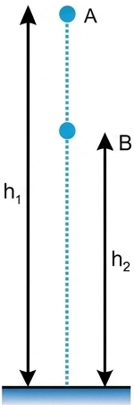
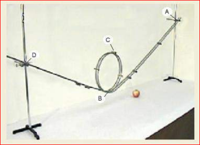

Kỉ lục nhảy sào thế giới hiện nay là 6,17 m do vận động viên người Thụy Điển Amand Duplantis lập năm 2020, kỉ lục nhảy cao thế giới hiện nay là 2,45 m do vận động viên người Cuba Javier Sotomayor lập năm 1993. Tại sao vận động viên nhảy sào có thể nhảy cao hơn vận động viên nhảy cao nhiều đến thế?
Chúng ta đã biết ở Trung học cơ sở:
Cơ năng của một vật là tổng động năng và thế năng của nó.
Khi vật chuyển động trong trường trọng lực thì cơ năng có dạng:

[Khung chứa Hình 26.1 - Tàu lượn siêu tốc]'">Hình 26.1
Động năng và thế năng có thể chuyển hoá qua lại lẫn nhau.
Như vậy động năng và thế năng có thể chuyển hoá qua lại lẫn nhau. Nếu thế năng chuyển thành động năng thì lực sẽ sinh công phát động, ngược lại, khi động năng chuyển thành thế năng thì lực sinh công cản.
1. Khi nước chảy từ thác xuống:
Trả lời:
2. Từ một điểm ở độ cao \(h\) so với mặt đất, ném một vật có khối lượng \(m\) lên cao với vận tốc ban đầu \(v_0\)
Trả lời:
Thảo luận về tàu lượn siêu tốc:
Trả lời:
Nhưng độ giảm của động năng có bằng độ tăng của thế năng, hay cơ năng không đổi không?
Bây giờ ta hãy xét quá trình chuyển hoá giữa động năng và thế năng trong dao động của con lắc đồng hồ (Hình 26.2a).
Mô hình đơn giản của con lắc đồng hồ gồm một thanh nhẹ, không dãn, một đầu được giữ cố định, đầu còn lại nối với một vật nặng (Hình 26.2b).

[Khung Hình 26.2b]'"> b)Hình 26.2. Con lắc đồng hồ quả lắc
Đưa vật nặng lên điểm A có độ cao xác định \(h\) so với điểm O rồi thả cho vật chuyển động tự do. Ta thấy vật chuyển động nhanh dần từ A xuống O, tiếp tục chuyển động chậm dần từ O lên B, rồi lại chuyển động nhanh dần từ B xuống O, chậm dần từ O lên A,...
Trả lời:
Thí nghiệm trên cho thấy độ tăng/giảm của động năng bằng độ giảm/tăng của thế năng, nghĩa là cơ năng luôn không đổi. Từ đó, ta có thể phát biểu định luật bảo toàn cơ năng như sau:
Khi một vật chuyển động trong trọng trường chỉ chịu tác dụng của trọng lực thì cơ năng của vật được bảo toàn.

[Khung chứa Hình 26.3 - Trượt ván]'">Hình 26.3
Hình 26.3 mô tả vận động viên tham gia trượt ván trong máng. Bỏ qua mọi ma sát, hãy phân tích sự bảo toàn cơ năng của vận động viên này.
Một con lắc đơn (Hình 26.4), biết độ dài dây treo là \(l = 0,6\) m. Đưa vật lên vị trí A hợp với phương thẳng đứng OC một góc \(\alpha = 30^\circ\) rồi thả nhẹ nhàng, vật sẽ đi xuống O (vị trí thấp nhất) rồi đi đến B, sau đó quay lại và dao động cứ thế tiếp diễn. Bỏ qua tác dụng của các lực cản, lực ma sát, lấy \(g = 9,8 \text{ m/s}^2\). Hãy tính độ lớn vận tốc của vật tại vị trí O.

[Khung chứa Hình 26.4]'">Giải:
Chọn mốc tính thế năng tại vị trí thấp nhất O.
Gọi cơ năng tại vị trí A, O lần lượt là \(W_A\) và \(W_O\).
Thế năng tại vị trí A và O là:
\(W_{tA} = m.g.h_A\). Từ Hình 26.4 ta có: \(h_A = OC - CE = l - l.\cos\alpha = l.(1 - \cos\alpha)\)
\(\Rightarrow W_{tA} = m.g.l.(1 - \cos\alpha)\);
\(W_{tO} = m.g.h_O = 0\) (vì \(h_O = 0\))
Động năng tại vị trí A và O là:
\(W_{dA} = 0\) ; \(W_{dO} = \frac{1}{2}m.v_O^2\)
Áp dụng định luật bảo toàn cơ năng ta có:
\(W_A = W_O \iff W_{tA} + W_{dA} = W_{tO} + W_{dO}\)
\(\Rightarrow m.g.l.(1 - \cos\alpha) = \frac{1}{2}m.v_O^2\)
\(\Rightarrow v_O = \sqrt{2.g.l(1 - \cos\alpha)}\)
Thay số ta có:
\(v_O = \sqrt{2 \times 9,8 \times 0,6 \times (1 - \cos 30^\circ)} \approx 1,26 \text{ m/s}. \)
Chúng ta cũng có thể dùng các kiến thức của bài trước để chứng minh rằng khi một vật chuyển động trong trọng trường chỉ chịu tác dụng của trọng lực thì cơ năng của nó được bảo toàn.
Ví dụ: Xét sự thay đổi động năng và thế năng của một vật có khối lượng \(m\) rơi tự do từ vị trí A (độ cao \(h_1\)) xuống vị trí B (độ cao \(h_2\)) (Hình 26.5).

[Khung Hình 26.5]'">Trong quá trình chuyển động đó, công \(A_{AB}\) của trọng lực được xác định bởi hiệu thế năng tại A và B:
\(A_{AB} = W_{tA} - W_{tB} = m.g.h_1 - m.g.h_2\) (1)
Nếu trong quá trình đó, vật chỉ chịu tác dụng của trọng lực thì công của trọng lực cũng được tính bằng độ biến thiên động năng từ A đến B:
\(A_{AB} = W_{dB} - W_{dA} = \frac{1}{2}m.v_B^2 - \frac{1}{2}m.v_A^2\) (2)
Từ (1) và (2) ta có:
\(W_{tA} - W_{tB} = W_{dB} - W_{dA}\)
\(\iff W_{tA} + W_{dA} = W_{tB} + W_{dB}\)
\(\iff W_A = W_B\)
Với \(W_A\), \(W_B\) lần lượt là cơ năng của vật tại A và B.
Dụng cụ: một viên bi, hai thanh kim loại nhẵn, hai giá đỡ có vít điều chỉnh độ cao.
Chế tạo: Dùng hai thanh kim loại uốn thành đường ray và gắn lên giá đỡ để tạo được mô hình như Hình 26.6.

[Khung chứa Hình 26.6 - Mô hình đường ray lượn vòng]'">Thí nghiệm: Thả viên bi từ điểm A trên đường ray. Viên bi có thể chuyển động tới điểm D không? Tại sao? Làm thí nghiệm để kiểm tra.
Một vật được thả cho rơi tự do từ độ cao \(h = 10\) m so với mặt đất. Bỏ qua mọi ma sát. Ở độ cao nào thì vật có động năng bằng thế năng?
Chọn mốc thế năng tại mặt đất. Cơ năng ban đầu của vật (tại độ cao \(h\)): \(W = W_{t\_max} = m.g.h\)
Khi động năng bằng thế năng (\(W_d = W_t\)), ta có cơ năng tại vị trí đó là \(W' = W_d + W_t = 2W_t = 2.m.g.h'\)
Áp dụng định luật bảo toàn cơ năng: \(W = W'\)
\(\Rightarrow m.g.h = 2.m.g.h' \Rightarrow h' = \frac{h}{2} = \frac{10}{2} = 5 \text{ m}\).
Vậy ở độ cao 5m thì động năng bằng thế năng.
Thả một vật có khối lượng \(m = 0,1\) kg từ độ cao \(h_1 = 0,8\) m so với mặt đất. Xác định động năng và thế năng của vật ở độ cao \(h_2 = 0,6\) m. Lấy \(g = 9,8 \text{ m/s}^2\).
Chọn mốc thế năng tại mặt đất.
Cơ năng của vật tại vị trí thả (động năng = 0): \(W = W_{t1} = m.g.h_1 = 0,1 \times 9,8 \times 0,8 = 0,784 \text{ J}\)
Thế năng của vật ở độ cao \(h_2\): \(W_{t2} = m.g.h_2 = 0,1 \times 9,8 \times 0,6 = 0,588 \text{ J}\)
Theo định luật bảo toàn cơ năng, cơ năng tại độ cao \(h_2\) bằng cơ năng ban đầu: \(W_2 = W \Rightarrow W_{d2} + W_{t2} = W\)
Động năng của vật ở độ cao \(h_2\): \(W_{d2} = W - W_{t2} = 0,784 - 0,588 = 0,196 \text{ J}\).
Giải thích được vì sao vận động viên nhảy sào có thể nhảy lên được tới hơn 6 m, trong khi đó vận động viên nhảy cao chỉ nhảy được tới hơn 2 m.
Bài 1: Một vật nhỏ khối lượng \(m = 200 \text{ g}\) được ném thẳng đứng lên cao từ mặt đất với vận tốc \(v_0 = 10 \text{ m/s}\). Bỏ qua sức cản không khí. Lấy \(g = 10 \text{ m/s}^2\). Tính độ cao cực đại mà vật đạt được.
Đổi \(m = 200 \text{ g} = 0,2 \text{ kg}\).
Chọn mốc thế năng tại mặt đất.
Cơ năng tại mặt đất (vị trí ném): \(W_1 = W_{d1} + W_{t1} = \frac{1}{2}mv_0^2 + 0 = \frac{1}{2} \times 0,2 \times 10^2 = 10 \text{ J}\).
Tại độ cao cực đại (\(h_{max}\)), vận tốc vật bằng 0 \(\Rightarrow\) động năng bằng 0.
Cơ năng tại độ cao cực đại: \(W_2 = W_{d2} + W_{t2} = 0 + mgh_{max}\).
Áp dụng định luật bảo toàn cơ năng: \(W_1 = W_2\)
\(\Rightarrow 10 = mgh_{max} \Rightarrow 10 = 0,2 \times 10 \times h_{max} \Rightarrow h_{max} = \frac{10}{2} = 5 \text{ m}\).
Bài 2: Từ độ cao 20m so với mặt đất, thả rơi tự do một vật có khối lượng 1kg. Lấy \(g = 10 \text{ m/s}^2\), bỏ qua lực cản không khí. Tính vận tốc của vật ngay khi chạm đất.
Chọn mốc thế năng tại mặt đất.
Cơ năng tại vị trí thả rơi (vận tốc đầu bằng 0): \(W_1 = W_{t1} = m.g.h = 1 \times 10 \times 20 = 200 \text{ J}\).
Cơ năng tại mặt đất (thế năng bằng 0, độ cao bằng 0): \(W_2 = W_{d2} = \frac{1}{2}mv^2\).
Áp dụng định luật bảo toàn cơ năng: \(W_1 = W_2\)
\(\Rightarrow 200 = \frac{1}{2}mv^2 \Rightarrow 200 = \frac{1}{2} \times 1 \times v^2 \Rightarrow v^2 = 400\)
\(\Rightarrow v = 20 \text{ m/s}\).
Bài 3: Một hòn bi lăn trên một máng nghiêng từ độ cao 0,45m xuống đất không vận tốc đầu. Bỏ qua ma sát. Vận tốc của hòn bi ở chân máng nghiêng là bao nhiêu? Lấy \(g = 10 \text{ m/s}^2\).
Chọn mốc thế năng ở chân máng nghiêng (mặt đất).
Cơ năng ban đầu tại đỉnh máng (\(v_0=0\)): \(W_A = W_t = m.g.h\)
Cơ năng tại chân máng (\(h=0\)): \(W_B = W_d = \frac{1}{2}mv^2\)
Bảo toàn cơ năng: \(W_A = W_B \Rightarrow m.g.h = \frac{1}{2}mv^2\)
\(\Rightarrow g.h = \frac{1}{2}v^2 \Rightarrow v = \sqrt{2gh}\)
Thay số: \(v = \sqrt{2 \times 10 \times 0,45} = \sqrt{9} = 3 \text{ m/s}\).